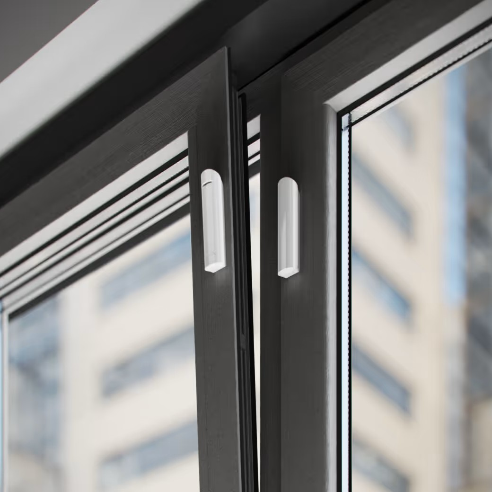
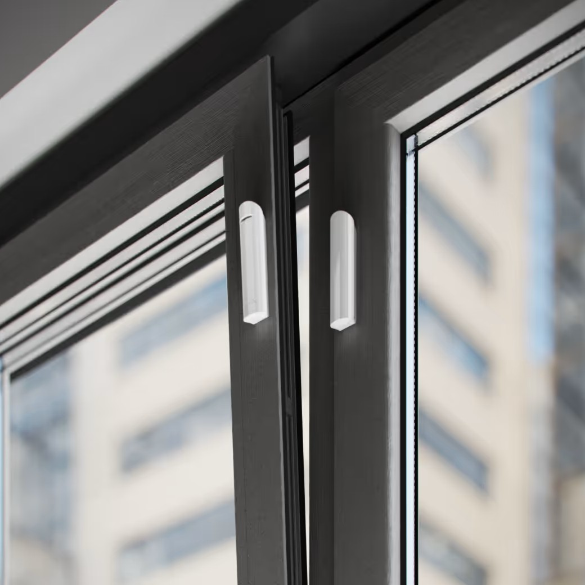

Бездротовий датчик відчинення Ajax DoorProtect Plus White


 

❮
❯
Бездротовий датчик відкриття Ajax DoorProtect Plus — це розширена версія датчика з додатковими функціями виявлення ударів та нахилу. Пристрій не тільки контролює відчинення дверей та вікон, але й реагує на спроби злому, удари та нахил поверхні. Ідеально підходить для захисту вікон, дверей, гаражних воріт та вітрин.
Основні характеристики:
Основні характеристики:
- 3 в 1: контроль відкриття + удари + нахил
- Виявлення спроб злому до відкриття
- Дальність зв'язку з хабом до 1200 м на відкритому просторі
- Чутливі елементи: акселерометр та геркон
- 3 рівні чутливості до ударів (налаштовується)
- Сенсор нахилу: від 5° до 25° (налаштовується)
- Функція пропуску одиничного удару
- Два магніти в комплекті (малий та великий)
- Можливість підключення зовнішнього дротового датчика NC
- Автономна робота до 5 років від однієї батареї
- Відкриття: Контроль стану дверей/вікон через геркон
- Удари: Виявлення спроб вибити двері або розбити вікно
- Нахил: Реагування на нахил поверхні (5°–25°)
- 3 рівні чутливості до ударів (низька, середня, висока)
- Можливість ігнорувати поодинокі удари
- Налаштування порогу спрацьовування сенсора нахилу
- Підключення зовнішнього дротового датчика NC
- Двосторонній зв'язок з хабом
- Блокове шифрування з плаваючим ключем
- Радіочастотний гопінг для захисту від завад
- Робочі частоти: 866,0–926,5 МГц (залежить від регіону)
- Максимальна потужність: до 20 мВт
- Миттєві сповіщення про тривоги
- Дистанційне налаштування у застосунках Ajax
- Тампер проти злому при спробі відриву від поверхні
- Захист від підміни — автентифікація пристрою
- Захист від перехоплення радіосигналу
- Передовий захист від радіозавад
- Сповіщення про низький заряд батареї
- Батарея: 1 × CR123A (попередньо встановлена)
- Строк роботи від батареї: до 5 років
- Номінальна напруга: 3 В⎓
- Споживання в режимі спокою: 11,8 мкА
- Виробник батареї: Huiderui
- Повна ємність: 1600 мА·год
- Розміри: Ø 20 × 90 мм
- Вага: 29 г
- Робочі температури: від −10°C до +40°C
- Вологість: до 75%
- Клас захисту: IP50
- Кольори: чорний, білий
- Призначений для встановлення в приміщенні
- ✅ Акселерометр для виявлення ударів
- ✅ Сенсор нахилу (5°–25°)
- ✅ Виявлення спроб злому ДО відкриття
- ✅ 3 рівні чутливості до ударів
- ✅ Функція пропуску одиничних ударів
- ✅ Налаштування порогу спрацьовування
- Магніт встановлюється праворуч від датчика
- Можна розташувати магніт горизонтально
- ⚠️ Не встановлюйте світлодіодним індикатором донизу
- Використовуйте малий магніт для тонких поверхонь
- Використовуйте великий магніт для товстих поверхонь
- Налаштуйте чутливість відповідно до типу об'єкта
- 🪟 Вікна (виявлення розбиття та відкриття)
- 🚪 Вхідні двері (контроль відкриття та ударів)
- 🏪 Вітрини магазинів
- 🚗 Гаражні ворота (нахил та відкриття)
- 🏢 Офісні приміщення
- 🏠 Балконні двері та вікна
- 🔐 Захист цінних предметів (виявлення нахилу)
- DoorProtect Plus Jeweller
- Кріпильна панель SmartBracket
- Елемент живлення CR123A (попередньо встановлений)
- Великий магніт
- Малий магніт
- Клема підключення стороннього датчика
- Монтажний комплект
- Коротка інструкція
1800.00 грн